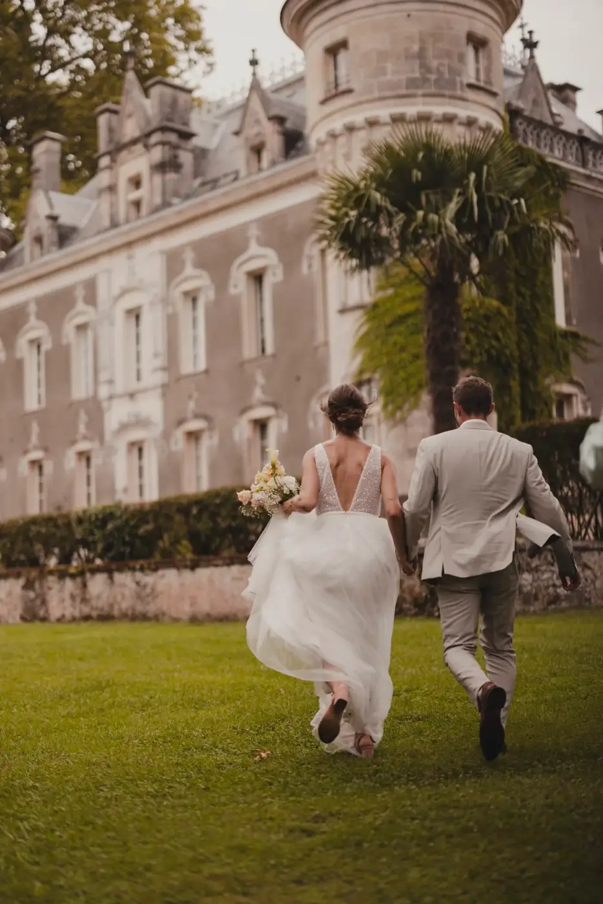
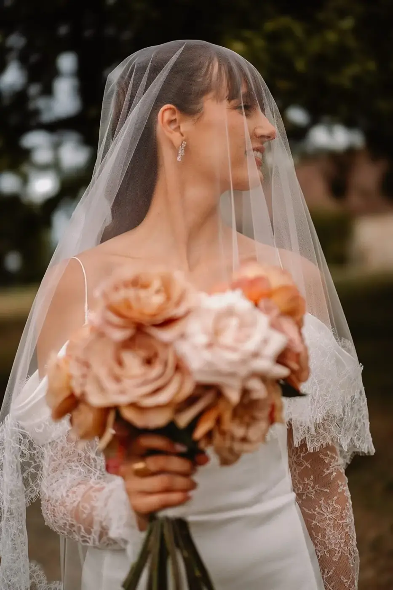
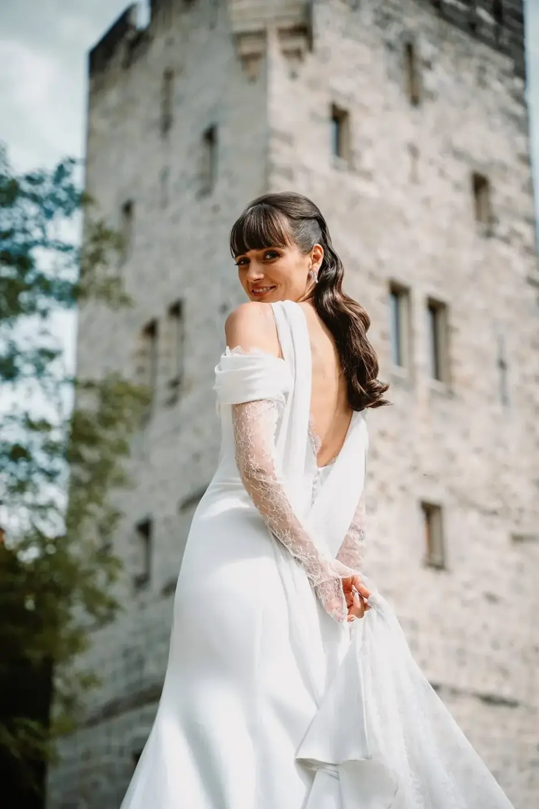
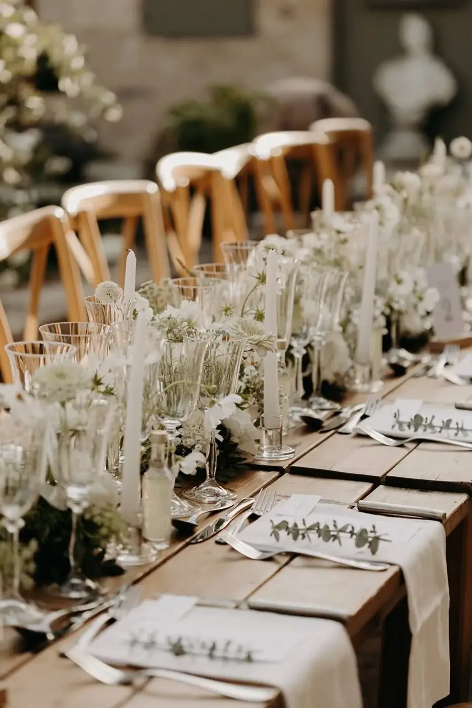
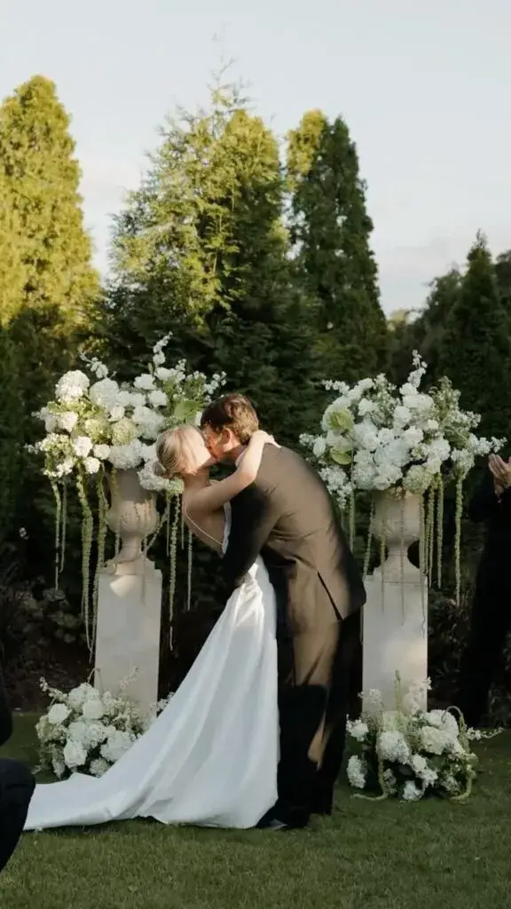

Les émotions restent, les détails s'effacent
Lorsqu’un couple commence à organiser son mariage, il imagine naturellement une journée parfaite. Le lieu est choisi avec soin, la décoration est pensée dans les moindres détails, les fleurs sont sélectionnées avec attention et chaque prestataire est choisi pour offrir la plus belle expérience possible.
Pourtant, lorsque les années passent, les souvenirs qui demeurent ne sont pas toujours ceux que l’on imaginait.
Les invités ne se rappelleront probablement plus de la couleur exacte des serviettes ou du parfum servi pendant le cocktail. Ils auront peut-être oublié le menu ou le nom du domaine où vous vous êtes mariés.
En revanche, ils se souviendront d’une émotion. Ils se rappelleront le regard échangé entre les mariés pendant la cérémonie. Le rire partagé lors d’un discours. Les larmes discrètes d’un parent. Une chanson qui a réuni toute la piste de danse.
Parce qu’au fond, un mariage ne se résume jamais à ce que l’on voit. Il se construit avant tout autour de ce que l’on ressent.
Aujourd’hui, les futurs mariés recherchent de plus en plus un mariage personnalisé, élégant et sincère. Ils souhaitent offrir une expérience unique à leurs proches, créer des souvenirs de mariage qui resteront gravés dans les mémoires bien après le jour J.
Mais comment faire pour qu’un mariage laisse une véritable empreinte dans le cœur de chacun ?
La réponse est souvent plus simple qu’on ne le pense.
Un mariage mémorable ne cherche pas à impressionner
À l’ère des réseaux sociaux, il est facile de croire qu’un mariage doit être spectaculaire pour être réussi.
Les images défilent. Les décors semblent toujours plus impressionnants. Les scénographies rivalisent de créativité. Les tendances évoluent sans cesse. Cette abondance d’inspiration est une formidable source d’idées. Mais elle peut aussi faire oublier l’essentiel.
Un mariage n’a pas besoin d’être extravagant pour devenir inoubliable. Les plus beaux souvenirs naissent rarement d’un effet spectaculaire.
Ils apparaissent lorsque les invités ressentent quelque chose de vrai. Lorsqu’ils comprennent que chaque détail raconte une histoire. Lorsqu’ils ont le sentiment d’assister à un mariage qui ressemble profondément au couple.
C’est précisément cette authenticité qui transforme une belle journée en souvenir durable.
Un mariage personnalisé ne cherche pas à suivre une mode. Il cherche à raconter une histoire. Votre histoire.
Les souvenirs naissent bien avant le jour J

Ils ne sont plus une liste de tâches, ils deviennent une partie de l’histoire.
On imagine souvent que les souvenirs commencent au moment où la cérémonie débute. En réalité, ils prennent naissance bien avant.
Les préparatifs font déjà partie de cette aventure. Le premier essayage de robe, la découverte du lieu de réception, les rendez-vous avec les différents prestataires, les éclats de rire pendant les dégustations, les doutes parfois ainsi que les moments de complicité. Toutes ces étapes participent déjà à la création de souvenirs précieux.
Le mariage ne dure pas seulement une journée, mais il représente plusieurs mois, parfois plusieurs années d’émotions partagées. Prendre conscience de cette richesse permet déjà de vivre les préparatifs autrement.
Les invités ne vivent pas votre mariage comme vous
Lorsque l’on organise son mariage, il est naturel de se concentrer sur les nombreux choix à effectuer comme la décoration, le plan de table, le déroulement de la cérémonie, les animations ou encore le menu.
Pourtant, les invités n’observent pas la journée avec le même regard. Ils ne connaissent pas les heures passées à choisir les fleurs. Ils ignorent les hésitations entre deux palettes de couleurs. Ils ne savent pas combien de temps vous avez consacré au choix des faire-part.
Ce qu’ils perçoivent, en revanche, c’est une ambiance, une atmosphère dans laquelle se ressent une émotion générale.
Ils ressentent immédiatement si un mariage est chaleureux. Ils sentent également lorsque les mariés sont détendus. Ils remarquent les échanges sincères, les regards complices et la joie qui circule naturellement.
Autrement dit, les invités vivent une expérience; et cette expérience devient leur souvenir.

L'émotion est le plus beau cadeau que l'on puisse offrir
On parle souvent des cadeaux invités; des petites attentions déposées sur les tables, des présents que chacun emportera en quittant la réception.
Ces objets sont toujours appréciés mais ils ne constituent pas le véritable souvenir.
Le plus beau cadeau qu’un couple puisse offrir à ses proches est invisible.
C’est une émotion.
Les émotions ne prennent pas la poussière, elles ne se rangent pas dans un tiroir.
Elles continuent d’exister longtemps après la fin de la journée.
Par exemple, un discours sincère, une cérémonie profondément personnelle, une surprise inattendue, un moment de silence.
Tous ces instants créent des souvenirs bien plus durables qu’un objet. Et c’est souvent ce que les invités racontent plusieurs années plus tard.


Chaque détail peut raconter quelque chose
Créer des souvenirs ne signifie pas organiser une succession de surprises. Il s’agit plutôt de donner du sens à ce qui existe déjà. Le plan de table peut évoquer un voyage.
Les noms des tables peuvent rappeler des lieux importants dans votre histoire. La décoration peut refléter votre personnalité. Les fleurs peuvent avoir une valeur symbolique. La musique peut accompagner les moments les plus importants de votre relation.
Lorsque chaque élément possède une intention, le mariage prend une dimension différente. Les invités sentent cette cohérence.
Ils comprennent que rien n’a été choisi au hasard. Ils ne voient plus simplement une belle décoration. Ils découvrent une histoire racontée avec délicatesse. Et cette histoire devient, elle aussi, un souvenir partagé.
Les souvenirs les plus précieux ne sont pas toujours prévus
Il est étonnant de constater que les moments les plus marquants d’un mariage sont souvent ceux qui n’étaient inscrits nulle part dans le planning.
Un enfant qui éclate de rire pendant la cérémonie, un grand-parent qui enlace les mariés avec émotion, un coucher de soleil inattendu ou une conversation improvisée entre deux générations.
Ces instants ne peuvent pas être programmés et c’est précisément ce qui les rend si précieux.
Ils rappellent que, malgré toute l’organisation nécessaire, un mariage reste avant tout une journée profondément vivante. Laisser une place à la spontanéité est sans doute l’une des plus belles façons de créer des souvenirs authentiques.

Les cinq sens : des alliés précieux pour créer des souvenirs durables

Lorsque l’on évoque les souvenirs, on pense souvent aux photographies ou aux vidéos. Pourtant, notre mémoire fonctionne de manière bien plus complexe. Elle enregistre les émotions, mais aussi tout ce que nos sens ont perçu au cours d’un moment important.
C’est pourquoi les souvenirs d’un mariage ne sont pas uniquement visuels.
Ils sont aussi sonores, olfactifs, gustatifs et même tactiles.
Il suffit parfois d’entendre une chanson pour revivre instantanément une soirée dansante. De sentir le parfum d’une fleur pour se replonger dans une cérémonie. De goûter un dessert similaire à celui du mariage pour retrouver une émotion oubliée.
Les futurs mariés réfléchissent souvent à la décoration, mais moins à l’expérience sensorielle qu’ils souhaitent offrir. Pourtant, celle-ci participe pleinement à la création de souvenirs durables.
Une lumière douce en fin de journée, le crépitement des bougies à la tombée de la nuit, une playlist soigneusement construite ou encore les parfums délicats d’un bouquet de saison contribuent à créer une atmosphère unique.
Les invités ne se souviendront peut-être pas précisément du nombre de compositions florales présentes sur les tables. En revanche, ils garderont en mémoire cette sensation particulière de bien-être, de douceur et d’harmonie.
Et c’est précisément cette émotion qui fera toute la différence.
L'expérience des invités, au cœur des souvenirs
Un mariage est avant tout un moment de partage.
Bien sûr, cette journée célèbre l’union de deux personnes. Mais elle rassemble aussi des familles, des amis, des générations parfois éloignées, qui prennent le temps de se retrouver.
C’est pourquoi l’expérience des invités joue un rôle essentiel dans les souvenirs qu’ils conserveront.
Dès leur arrivée, ils perçoivent une ambiance. Ils observent le lieu, découvrent la décoration, retrouvent des proches qu’ils n’ont parfois pas vus depuis des années. Très rapidement, ils ressentent une énergie. Si tout est fluide, chaleureux et naturel, ils se détendent. Ils profitent pleinement de chaque instant.
À l’inverse, si les temps d’attente s’allongent ou si le déroulement semble confus, cette sensation influence inconsciemment leur perception de la journée.
Créer de beaux souvenirs, c’est donc penser au confort des invités autant qu’à l’esthétique du mariage.

Cela passe par de petites attentions comme un accueil chaleureux ou bien une cérémonie qui leur permet de comprendre votre histoire. Des espaces agréables pour échanger, un rythme équilibré.
Toutes ces décisions semblent discrètes, pourtant, elles construisent peu à peu une expérience dont chacun se souviendra.
Les photos racontent une partie de l'histoire… mais pas toute l'histoire

Aujourd’hui, chaque mariage donne naissance à des centaines, parfois des milliers de photographies. Elles permettent de conserver une trace précieuse de cette journée.
Mais elles ne racontent jamais tout. Une photo capture un instant, fige un sourire, immortalise une décoration et révèle une émotion. En revanche, elle ne retranscrit pas le silence juste avant l’entrée de la mariée. Elle ne raconte pas les éclats de rire qui ont suivi un discours improvisé. Elle ne montre pas l’odeur des fleurs, la fraîcheur d’une soirée d’été ou l’émotion ressentie lorsque les premières notes d’une chanson résonnent.
Les plus beaux souvenirs vivent justement entre les images. Ils appartiennent à ceux qui les ont ressentis. C’est pourquoi il est si important de vivre pleinement son mariage plutôt que de chercher à produire uniquement de belles photographies.
Les images conserveront les souvenirs, mais ce sont les émotions qui leur donneront leur véritable valeur.
Le rôle du wedding planner dans la création des souvenirs
Lorsqu’on évoque le métier de wedding planner, on pense spontanément à l’organisation, au planning ou à la coordination des prestataires.
Bien sûr, ces missions sont essentielles, mais elles ne résument pas toute la richesse de cet accompagnement.
Un wedding planner construit une expérience. Il réfléchit au rythme de la journée, à la manière dont les invités vont circuler, à l’enchaînement des temps forts et à la cohérence entre chaque instant.
Son rôle consiste aussi à protéger les mariés. En prenant en charge les imprévus, il leur permet de vivre pleinement leur journée.
Ils ne passent plus leur temps à répondre aux questions logistiques. Ils profitent en prenant le temps de regarder leurs proches. Ils savourent leur cérémonie. Ils dansent, rient, et surtout, ils créent leurs propres souvenirs.
Ce travail reste souvent invisible. Pourtant, il influence profondément la manière dont une journée sera vécue.

Les souvenirs se construisent dans les petits instants
Lorsque les couples racontent leur mariage plusieurs années après, ils évoquent rarement uniquement les grands moments. Ils parlent aussi des détails, du regard échangé quelques secondes avant la cérémonie, de la main serrée juste avant d’entrer, d’une discussion avec un grand-parent, d’un enfant endormi sur une chaise au milieu de la soirée.
Ces scènes paraissent anodines mais elles deviennent pourtant les souvenirs les plus précieux.
Pourquoi ? Parce qu’elles sont sincères.
Elles n’ont pas été mises en scène. Elles racontent la vraie vie. Un mariage n’est pas une succession de performances. C’est une journée remplie d’instants simples qui prennent une valeur immense avec le temps.
Accepter que tout ne soit pas parfait

Il existe une idée qui rassure souvent les futurs mariés.
Les invités ne recherchent pas la perfection. Ils recherchent une émotion.
Un mariage peut connaître un petit retard, un discours un peu plus long que prévu, une météo capricieuse ou un imprévu de dernière minute; et malgré tout, devenir le plus beau souvenir de l’année.
Pourquoi ? Parce que personne ne se souvient d’un mariage pour sa perfection.
On s’en souvient pour ce qu’il nous a fait ressentir. Les imprévus deviennent parfois les anecdotes les plus drôles.
Les petits contretemps créent même souvent des moments de complicité. Ils rappellent qu’un mariage est un événement vivant. Et c’est précisément cette spontanéité qui le rend unique.
Un souvenir ne se mesure pas au budget
Il est parfois tentant de croire qu’un mariage spectaculaire laissera forcément un souvenir plus fort. En réalité, les choses sont bien plus nuancées.
Le budget permet de créer un cadre. Il offre des possibilités mais il ne crée pas l’émotion. Ce sont les attentions, les échanges, l’atmosphère et la sincérité qui marquent les invités. Un mariage intimiste organisé dans une maison de famille peut laisser un souvenir extraordinaire. Tout comme une grande réception dans un château.
La différence ne réside pas dans le lieu mais dans l’intention. Lorsque chaque choix est guidé par l’envie de partager un moment vrai, les souvenirs se construisent naturellement.

En bref,
Le plus beau paradoxe du mariage est sans doute celui-ci :
Le jour même, tout semble passer très vite. Les émotions s’enchaînent, les heures défilent. Puis les années passent.
Et certains souvenirs prennent une importance nouvelle. Une photographie que l’on regardait peu devient précieuse, une phrase prononcée pendant un discours résonne différemment et le rire d’un proche disparu devient un trésor.
Le mariage continue alors d’exister bien après sa célébration. Il accompagne la vie du couple en devenant une partie de son histoire.
Et c’est probablement là toute la beauté de cette journée.
Lovely Day Event c'est plusieurs types de prestations
L'organisation de mariage
Je vais intervenir sur toutes les étapes de vos préparatifs et vous guider dans vos choix. Je suis force de proposition pour que votre mariage ne ressemble qu’à vous.
Décoration de mariage
Créative et passionnée, je suis certifiée Wedding Designer et je conçois une ambiance scénographique qui correspond au thème de votre mariage.
Coordination le jour J
Je serai le chef d’orchestre pour gérer les différents prestataires, la mise en place de votre décoration et le déroulement de cette belle journée.